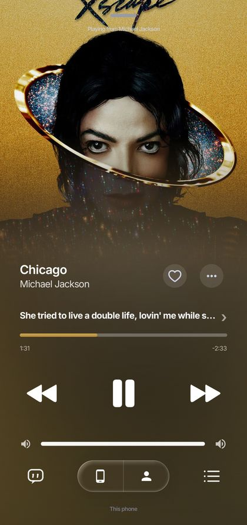
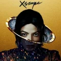
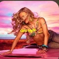
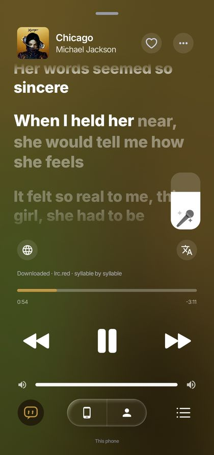
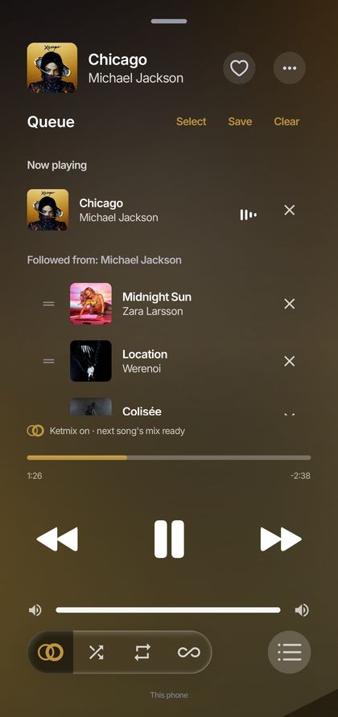
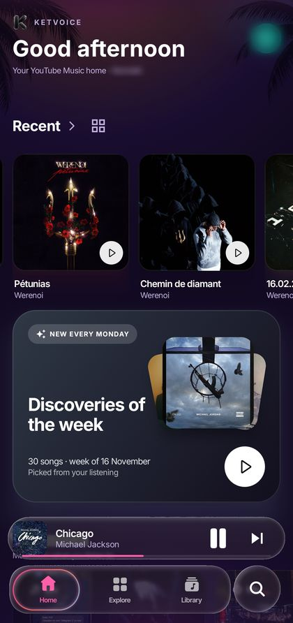
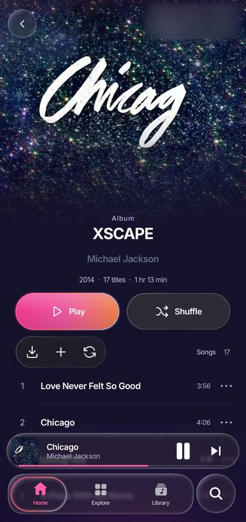
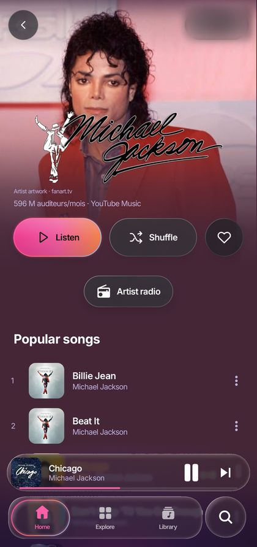
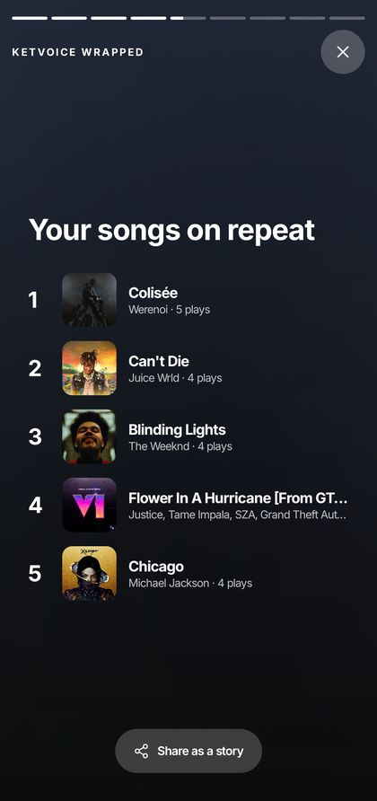
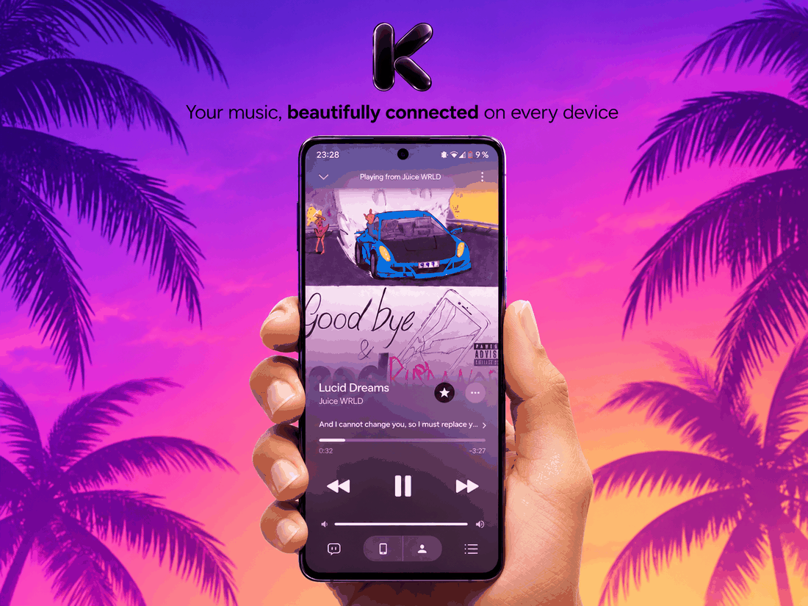

Ketmix mixes like a DJ.
Tempos matched, bars lined up, bass handed over — then each song glides back to its own speed. The DJ editor lets you pick the mix points yourself.
Ketmix blends one song into the next like a DJ, a slider turns the singer down, and the lyrics follow every word — on your phone, in the car and on Meta Quest.


On repeat in the screenshots

Chicago Michael Jackson
Midnight Sun Zara Larsson/features
A player built around how songs actually sound: mixes on the beat, lyrics that light up as they are sung, and a slider for the singer’s voice.
Tempos matched, bars lined up, bass handed over — then each song glides back to its own speed. The DJ editor lets you pick the mix points yourself.
Words light up as they are sung, backing vocals only in their turn, and a note the singer holds glows a little — now on the lock screen too.
Slide the voice level and the singer steps back, so you can sing over the song. The separation happens on the phone, for the song you are playing.
Start a session and share its code, link or QR code: everyone who joins hears the same song at the same moment.
/new-in-7.5
Send your music, downloads included, to a Google or Nest speaker, a Chromecast TV or a sound bar.
One switch shows each line in Latin letters: Japanese, Chinese, Korean, Russian, Greek, Hindi, Thai and more.
Pages take the colour you actually see on the cover, with a bigger cover and tighter text.
Canvas and covers show at once the second time, downloads use several connections, and any song can be improved from its menu.
Choose how clear the glass is, from transparent to tinted, and watch sliders turn to glass under your finger.
While charging in landscape: a large clock, the cover or Canvas and the line being sung.
/ketmix-demo
Two loops written in code for this page, at 124 and 116 BPM. Drag the transition, pick a preset, then compare with and without the mix.
The live demo needs JavaScript and Web Audio.
/screens
Screenshots from Ketvoice 6.1.2.






/vice-city
A limited Vice City theme in the app until 10 December, and a GTA VI welcome screen for the game’s release on 19 November.

Ketvoice is not affiliated with Rockstar Games.
/download
Free for Android and Meta Quest.
Phone & tablet · Android 12+
Quest 3 and 3S
Android 11+ · modest phones & tablets
| APK downloads | 110 |
|---|---|
| Listening nowLive tracking not connected yet |
Ketvoice 7.5.0 brings Google Cast, lyrics in Latin letters, truer album colours, artwork that stays cached, faster downloads, one glass slider, search inside your lists and a standby screen while charging. Ketvoice 7.4.0 brings two home-screen widgets that really control your music, an immersive artist page, calmer player colours and bigger covers on Downloads and Favourites. Ketvoice 7.3.0 lets you select downloads and get them again in better quality, imports playlists from Apple Music, Tidal and SoundCloud, opens albums on a floating cover or their Canvas, and adds a breathing player, song credits and a share card. Ketvoice 7.2.0 brings a Library laid out like Apple Music, Favourites and Downloads pages, Lossless badges, faster starts, lighter Canvas, phone and web in step and better search. Ketvoice 7.1.0 makes Ketmix keep song endings and mix more carefully, keeps glass readable, adds a black theme, a compact widget and a radio that does not repeat itself. Ketvoice 7.0.0 brings a Home made for you, songs of the same style after your queue, Downloads sorted like Apple Music and the rhythm model built in. Ketvoice 6.9.0 brings a Ketmix editor you can shape and hear, and mixes that respect the lyrics. Ketvoice 6.8.0 lets Ketmix download a small AI model that finds beats and bars. Ketvoice 6.7.0 fits each Ketmix blend to its two songs, makes Ketvoice Lite start faster and brings back the GTA VI welcome screen. Ketvoice 6.6.0 makes the app smoother, redoes Playlists and Downloads, lays out tablets better and gives Vice City a quieter look. Ketvoice 6.5.0 brings Ketvoice Lite to Android 11 and tunes it for phones and tablets with little memory, with the same effects. Ketvoice 6.4.0 brings your friends' activity, redone widgets with live lyrics, smart offline downloads, cleaned-up local music and the Vice City neon night with Vice FM. Ketvoice 6.3.0 brings shared playlists, a public profile, Air Ket to move everything to a new phone over Wi-Fi, Canvas kept on the phone and shared by an album, new-release notifications and a faster start. Ketvoice 6.2.1 gives the Vice City theme a striped setting sun on Home and a sunset fill on the player's seek bar and sliders. Ketvoice 6.2.0 brings Ketvoice accounts with a profile photo and your library on every device, a search that understands what you ask, mood playlists, Spotify and Deezer playlist import, a livelier player, a welcome for new listeners and a limited theme for every season. Ketvoice 6.1.2 fixes the crash at launch of 6.1.0 and 6.1.1 on some phones. Ketvoice 6.1.1 adds a safe mode that shows the crash report if the app closes while starting. Ketvoice 6.1.0 lets friends listen together with Ketogether, lets you place your own mix points in the Ketmix editor, shows the sung line on the lock screen, adds weekly discoveries and a monthly Replay, resumes playback by itself if Android stops it, comes as a lighter Ketvoice Lite APK, and celebrates GTA VI with a limited Vice City theme until 10 December (Ketvoice is not affiliated with Rockstar Games). 6.0.0 Beta 5 brought Android Auto and iOS 27 sliders. Ketvoice 6.0.0 Beta 5 runs in the car with Android Auto — browse, search and play by voice — keeps the music going in the background with three minutes read ahead, makes sliders swell under your finger like iOS 27 and shows Ketmix's sign under the seek bar while two songs are mixed. Beta 4 brought beat-matched Ketmix blends that glide back to each song's tempo, an instant voice slider, gapless quality upgrades, a new glass icon, glowing lyrics, a floating search and covers that zoom into their page. Beta 2 was the redesign of Ketvoice 6: Ket 27 becomes the only interface, lyrics flow in Cascade, the glass menu unfolds from any song, and tablets and large windows get a glass sidebar, two-pane pages, a player with the lyrics beside the artwork, keyboard and mouse. On the lyrics screen, a slider turns the singer's voice down on separated downloads — on top of Ketmix's high-quality voice separation, mixes prepared from the first seconds of a song, lyrics videos, Wrapped and widgets. Screenshots depict earlier versions; see the English release notes for details. Ketvoice Studio retains verified-owner publishing.
/faq
Yes. Every version is published as APKs on GitHub, free to download, and the app updates itself from there.
Android 12 and later on phones and tablets, Android Auto in the car, and Meta Quest 3 and 3S. Ketvoice Lite also runs on Android 11. When a release carries Ketvoice Lite or Wear OS, they appear in the download list.
One person starts a session and shares its code, link or QR code. Everyone who joins hears the same song at the same moment.
Yes: the voice slider works on the song you are hearing, which is separated on the phone when you touch it.
It is the Vice City edition, for the release of GTA VI on 19 November; the theme leaves the app on 10 December. Ketvoice is not affiliated with Rockstar Games.